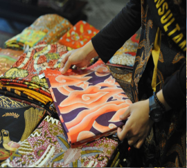

Megamendung Batik
Batik Megamendung is a traditional batik from Cirebon, West Java, recognized for its distinctive cloud patterns.
A curated collection of Indonesia's finest artistic expressions, from ancestral traditions to contemporary creations

Batik Megamendung is a traditional batik from Cirebon, West Java, recognized for its distinctive cloud patterns.
A timeless textile tradition representing the creativity and cultural identity of Indonesian artisans.
Traditional patterns that carry stories, values, and heritage passed down through generations.
An iconic cloud-inspired motif symbolizing calmness, patience, and wisdom.
A beautiful expression of local craftsmanship and Indonesia's rich textile heritage.
Handmade textile art reflecting the dedication of local Indonesian craftsmen.
A collection of traditional motifs with unique meanings and cultural significance.
Preserving traditional artistry through generations of creative expression.